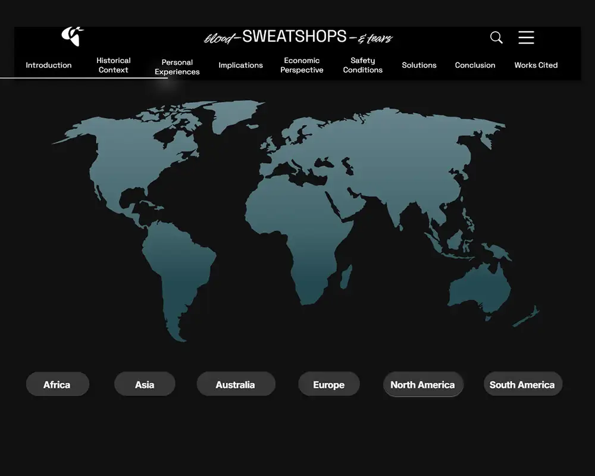
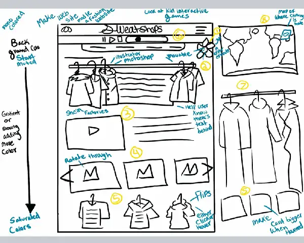
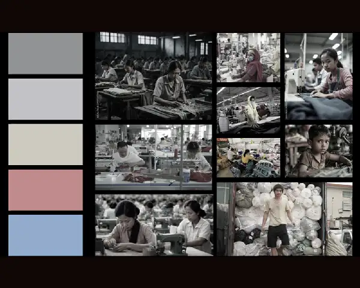
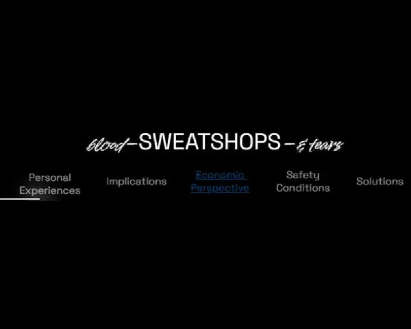
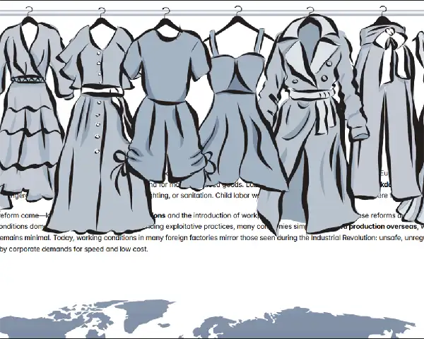

Interactive map: Helped users visualize the global scale of sweatshops and made the issue feel more real and immediate.

Sweatshop Interactive was a collaborative project focused on educating users about sweatshops, their global presence, and the injustice many workers face. The challenge was not just presenting the information, but presenting it in a way that encouraged users to stay engaged with a difficult topic rather than skim past it.
Lead UX/UI Designer
12 weeks
2 designers + 3 English students
Framer, Figma, Illustrator, Rive
Our team was asked to create eight immersive and interactive elements that would break up large sections of written content and encourage users to explore the material. Because the subject of sweatshops is emotionally heavy, a traditional article-style layout risked feeling overwhelming, passive, or too wordy.
The design challenge was to turn a large amount of serious content into an experience that felt informative and immersive without becoming distracting, playful, or disrespectful.
Help users understand what sweatshops are, how they operate, and how they affect workers around the world.
Prevent users from disengaging from long blocks of text by using interactive content and visual storytelling.
Maintain a somber, thoughtful tone that supported the subject matter instead of trivializing it.
Leave users with a clearer understanding of the injustice behind sweatshop labor so they could make more informed decisions.
This website was designed for people who may not fully understand what sweatshops are or the conditions workers face inside them. The experience was meant to introduce users to the issue in a way that felt clear, approachable, and emotionally grounded.
By the end of the site, the goal was for users to walk away with a respectful understanding of the realities of sweatshop labor and the human cost behind fast, inexpensive production.
Designed the interactive map, flip cards, carousel sections, and progress-tracking navigation.
Took over twenty pages of written material from the English team and organized it into sections that made sense visually and narratively.
Structured the page to reduce fatigue, improve flow, and support a more immersive reading experience.
Built the final experience in Framer, researched technical solutions, and sourced supporting media such as imagery and video.
The project began with whiteboard planning and rough wireframe sketches. Once the English students provided the written narrative, I reviewed the content and began mapping it into sections that would be easier for users to move through.
Since there was a large amount of text, one of my biggest responsibilities was deciding where interactions could help support understanding, reduce repetition, and keep the page from feeling overwhelmingly long.

Because the subject matter was serious, the visual tone needed to remain restrained. I used a darker, muted palette and avoided anything that felt overly playful or decorative. The interaction style was intentional: enough to keep users engaged, but never so much that it distracted from the content.


The final site included multiple interactive elements designed to improve understanding, support pacing, and prevent the experience from feeling like one long wall of text.
One of the most important parts of this project was knowing when to pull back. Early in the process, I explored illustrated clothing interactions and animated garments in Rive that revealed information on hover. While the concept was visually interesting, it ultimately felt too playful and took away from the seriousness of the subject.
I chose to remove those ideas and move in a cleaner, more grounded direction. That decision taught me that good interaction design is not about adding movement everywhere — it is about knowing when interaction supports meaning and when it works against it.

The largest design shift came from removing the more illustrative concepts and refining the site into something cleaner and more professional. I also explored adding a section that would identify brands or sites connected to sweatshop labor, but due to time constraints, that part was not completed.
This was one of my first major projects using Framer, so I had to learn new tools and workflows while actively building the site.
The writing from the English team was extensive, and I had to shape it into a flow that felt readable, intentional, and visually balanced.
Some features, especially horizontal scrolling image sections, were difficult to execute and still needed refinement by the end of the project.
The biggest design challenge was creating an experience that felt immersive without making the subject feel stylized in the wrong way.
The final website transformed a large amount of written material into a more immersive educational experience. Rather than relying on passive reading alone, the final design used interaction, pacing, and visual structure to help users move through the story with greater clarity and engagement.
Most importantly, the final direction better respected the seriousness of the topic. The project showed me that interaction design can be a powerful storytelling tool when it is used with intention.
This project taught me that interaction design is not about adding movement just because it looks interesting. It is about helping users stay engaged, understand information more clearly, and move through content in a way that feels meaningful.
Working in Framer under pressure also taught me how to pivot, troubleshoot, and reevaluate my ideas when they were not working. I learned how much design judgment matters — especially when working with sensitive subject matter.
If I continued this project, I would conduct user testing, refine the glitchier interactions, and fully adapt the experience for mobile so the storytelling and interaction system worked well across all screen sizes.
Interact with the full desktop version right here. Click, scroll, and explore the experience.
Interactive desktop preview may not load in all browsers.